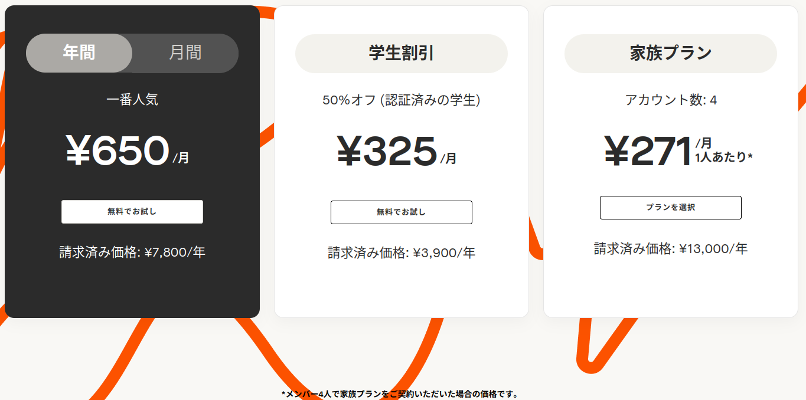
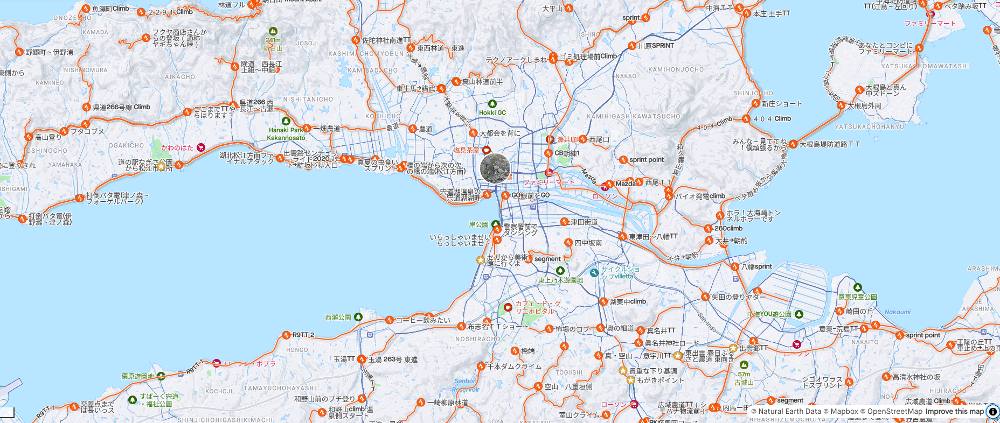
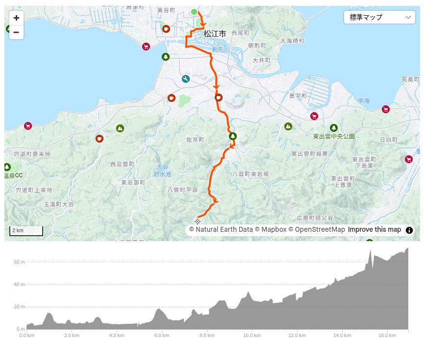
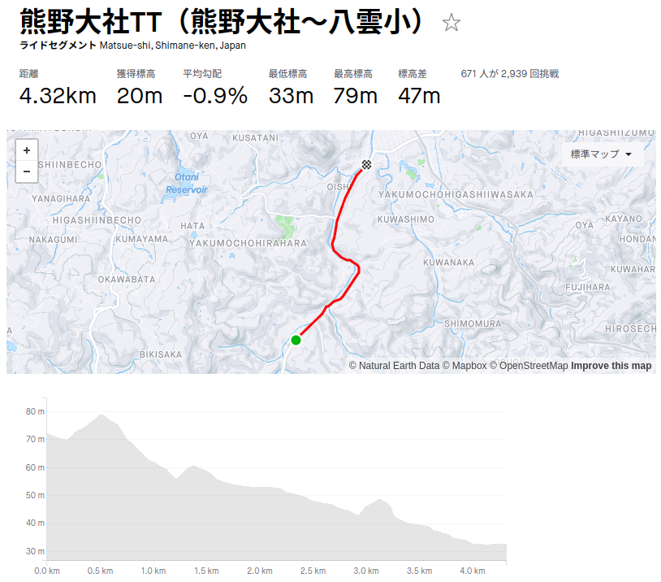

Strava サブスクリプションに加入した（お散歩カメラ 2024-08-03）

Strava サブスクリプションに加入した
実は最初にサイコンを導入した辺りから Strava のアカウント自体は取得していたのだが，プロファイルやアクティビティは極力非公開にし，無料かつ最小限の利用に止めていた。 最近サイコンを Garmin 製に替えたことでアクティビティの入力が Garmin Connect に一本化され Strava との同期もしやすくなった。 そこでようやく Strava のプレミアム機能を試してみる気になったのだった。
ちなみにサブスクリプション料金はこんな感じ。

スマホアプリの決済機能を使うか Web サイトで直接契約できる（代行を騙る詐欺に注意）。 なお，30日の無料お試し期間がある。
Strava サブスクリプション加入で開放されるプレミアム機能は色々あるが，私のような「ぼっち・ざ・らいど！」な人向けの機能として以下を挙げてみる。
- 高度トレーニング機能
- 目標のカスタイマイズ
- 相対的エフォート
- Fitness & Freshness
- ルートの検索
Strava の目玉機能のひとつである「セグメント」だが，私の場合，他ユーザと競えるほどの脚力も体力もないのよね。 松江市内だけでも結構な数のセグメントがあるんだけど

ランキングを見るとトップの人は平気で平均時速50kmとかで走ってるのよ。 後で書くけど，比べるのもおこがましいほどの差がある。 これで他人様とツーリングなんて夢のまた夢だよな。
さて，前説はここまで。 そろそろお散歩カメラを始めよう。
今日は定点観測はなし
今日は学園通り付近に用事あり。 いつもは宍道湖や松江城に寄り道して定点観測をするんだけど，今日明日と水郷祭で，宍道湖沿いの歩道に有料席が設けられている関係で実質的に規制されているのよ。 ホンマ迷惑なんだけど，田舎の貴重な観光資源だし，しょうがないか。
ちうわけで寄り道なしで学園通りへ直行することにした。 今日も猛暑日予報なので午前中の早いうちに用事を済ませる。
天下一品のラーメン食って八雲温泉へ行こう
早めに用事が済んだので，学園通りの天下一品で昼飯を食ったあと
八雲温泉に行ってみることにした。 ルートはこんな感じ。

日焼け止めの塗り直しと水の確保をしておかないと。 ついでに本屋で雑誌を購入。

- 日経サイエンス2024年9月号 [雑誌]
- 日経サイエンス (編集)
- 日経サイエンス 2024-07-25 (Release 2024-07-25)
- Kindle版
- B0D9VNGMK3 (ASIN)
- 評価
特集は「食欲の正体」。 Kindle 版は後日で購入。 Kindle 版は固定レイアウトなので，ブラウザの Kindle Reader サイトで読める。「健康な肥満」の記事は面白かった。
それじゃあ出発するか。 まずは楽山公園に寄り道。
よく見たら祠の屋根が欠けとるがな。 どしたんな？
気を取り直して移動再開。 途中，水分補給のための小休憩を挟みつつ。
意宇川のアオサギや鯉など眺めつつ。
蝉の
ようやく八雲温泉に到着。 滝のように汗が流れる。 はよ温泉へ！
ぷはー。 いいお湯でした。 ちなみに写真に写ってるエナジーバーはチョコレートの部分がデロンデロンに解けていた。 夏場にチョコを買ってはいけない。
初めてのタイムトライアル
汗が引いたところで日焼け止めを塗り直し。
ほんじゃあ市内に移動しますかね。 折角なので通り道にあるセグメントでタイムトライアルを敢行してみる。

緩やかな下りということもあって，この自転車を買って以来，初めてフロントリングのギアをアウターに入れたよ。 ちなみに順位は758/876位だった。 だってトップの人なんて平均時速50km以上で走ってるんだよ。 一方の私は，こんだけ頑張って平均時速27.5kmが精一杯。
というわけで，これからも「ぼっち」で遊ぶことにしよう（笑） 3年後には平均時速30kmを超えられるといいねぇ。
珍しく頑張ったので，ご褒美を。
そのまま夕方まで喫茶店で読書していた。
ダイエット@がんばらない
最近見た YouTube 動画で面白かったのがこれ。
この中で言っている「意志の強さではダイエットできない」については激しく同意した。
実際，私がちゃんと痩せれるようになったのは自転車を再開してからなんだよね。 で，心筋梗塞をやらした後の心臓リハビリを継続できているのも自転車を再開していたおかげと思っている。
本気で痩せたいなら，まずは運動によって筋力と体力を付け代謝機能を上げる必要がある。 糖尿病のような代謝不全の病気でも同じ（重症者の場合は運動すればいいとは言えないけど）。 私の場合は心臓リハビリのフィットネスバイクとサイクリングを継続することで勝手に（BMI上の）標準体重まで落ちた。 「嗚呼，やっぱ痩せたければ運動しないとダメだったんだな」と思い知ったよ。
そもそも私は運動神経が鈍くスポーツ嫌いである。 特に他人と競うような競技スポーツなど劣等感を煽られるだけだしク◯喰らえと思っている（下品でスマン）。 それでもこうして楽しいと思えるスポーツ（＝遊び）に出会えたのは幸運だろう。 やっぱ「楽しい」「面白い」は人生を生きるための最大のインセンティブだよ。
ダイエットのために運動し続けるのはシンドい。 でも楽しく運動する（＝遊ぶ）ことが出来るようになればダイエットなんていつでも出来るのである。
あと，上の YouTube 動画で出なかった話として，継続するために「記録をつける」ことが大事だと思う。
私は心筋梗塞のあと，血圧と体重の記録を毎日つけている1。 手作業が面倒くさくなって自動化したけど（笑） 記録をつけることによって体調の変化に気付きやすくなる。 主治医に記録を見せれば薬の処方を調整したり色々とアドバイスをもらえるようになる。 また Strava でアクティビティの記録をつければ運動や疲労を可視化でき「やりすぎ」に気付くことが出来る。
運動やダイエットを頑張ってはいけない。 頑張らないといけないのは運動やダイエットを「仕事」にしている人だけ。 「健康」は（楽しく）人生を送るための手段であり，それ自体を目的にしてはいけないのだ。
ブックマーク
- 【要注意】家の場所を公開しちゃってない？「Strava」のログ非公開、プライバシー処理などの設定まとめ
- Stravaプレミアム（Premium）のFitness & Freshnessがなかなか良い | アフログ
参考

- Canon コンパクトデジタルカメラ PowerShot ZOOM 写真と動画が撮れる望遠鏡 PSZOOM
- キヤノン (Release 2020-12-10)
- エレクトロニクス
- B08L4WKDZ7 (ASIN), 4549292179675 (EAN)
- 評価
望遠鏡型コンパクトデジカメ。メモリと充電器（要 Power Delivery）は別に用意する必要がある。使い勝手はまぁまぁ。

- trimm ROLLIN サイクルコンピュータ GPS 自転車 速度計 ワイヤレス ナビゲーション ANT+センサー対応 Bluetooth 心拍数 高度計 2.7インチ スピードセンサー(device only)
- Trimm
- B0BLNFPWTQ (ASIN), 8809748020286 (EAN)
- 評価
韓国企業だけどモノは made in Chaina って書いてあった。ナビ機能付きで2万円以下というのは安い。スマホアプリと連携させて操作する。モノクロ液晶だがバッテリ消費は少なめ。各種センサーやスマートウォッチと連携可能。

- GARMIN ガーミン エッジ(Edge) 130plus 日本版 本体のみ GPS ブルートゥース Android/iOS対応 (010-02385-05)【日本正規品】
- ガーミン(GARMIN)
- スポーツ用品
- B08BZ5T9NZ (ASIN), 0753759265137 (EAN), 753759265137 (UPC)
- 評価
Garmin 製のいっちゃん安いサイクルコンピュータ。白黒液晶で筐体も小さいけど視認性は問題ない。ボタンが硬くてちょっと操作し辛い。ルートナビゲーションはホントに簡易表示のみなのでナビ機能が欲しい人は上位機種を検討したほうがいい。ほかは申し分なし。

- GARMIN(ガーミン) vívosmart 5 Black S/M バンド型スマートウォッチ 心拍計【日本正規品】
- ガーミン(GARMIN) (Release 2022-04-21)
- エレクトロニクス
- B09XGYX7JF (ASIN), 0753759301590 (EAN), 753759301590 (UPC)
- 評価
サイクルコンピュータと Bluetooth または ANT+ で連携可能なスマートバンド（活動量計）として購入。 Garmin 製なのに自前では GPS 機能がない（スマホの GPS 機能と組み合わせて使う）。活動量計としての機能は十分というかありすぎる（笑）

- ミニサイズ Shokz OpenRun Mini 骨伝導イヤホン 公式ストア正規品 ワイヤレス 急速充電 驚きの通話品質 IP67防塵防水 bluetooth5.1 2 30日間返品無料 コズミックブラック
- Shenzhen Shokz Co., Ltd.
- エレクトロニクス
- B09TVLHJ1X (ASIN), 4512223694288 (EAN)
- 評価
以前のものはマルチファンクションキーが利かなくなったので Black Friday の安売りのタイミングで買い替え。私のように頭の小さい人向け（笑） 値段並みの音質はある，と思う。耳が自由って素晴らしい。

- ビオレUＶ アクアリッチ アクアプロテクトミスト 60ミリリットル (x 1)
- 花王 (Release 2023-02-08)
- ヘルスケア&ケア用品
- B0BT1X9H7B (ASIN), 4901301416438 (EAN)
- 評価
スプレータイプで白くならない。鞄に忍ばせて手軽に使える。

- シマノ(SHIMANO) サイクリンググローブ EXPLORERグローブ 2023年モデル ネイビーL 手の周りサイズ目安:22.9-24.8㎝
- シマノ(SHIMANO)
- スポーツ用品
- B0BVNVW1W5 (ASIN), 4550170308131 (EAN)
- 評価
夏用のサイクリンググローブ。今まで使ってたのがボロボロになったので試しに買ってみた。着け心地よく違和感はない。手の甲の部分で上手く熱を逃している感じ。安売り中で安く買えた。サイクルグローブは基本的に手洗い。洗濯機の手洗いコースでもOKだが漂白剤・柔軟剤はNG。

- 健康寿命を延ばす心臓リハビリテーション入門
- 飯田 圭 (著)
- 幻冬舎 2023-12-18 (Release 2023-12-18)
- 単行本（ソフトカバー）
- 4344947509 (ASIN), 9784344947504 (EAN), 4344947509 (ISBN)
- 評価
Java や Go 本の翻訳でおなじみ柴田芳樹さんのブログで紹介されていたのでポチってみた。心臓リハビリの三本柱「運動」「食事」「ストレスマネージメント」について解説されている。

- 片田舎のおっさん、剣聖になる 1 ～ただの田舎の剣術師範だったのに、大成した弟子たちが俺を放ってくれない件～ (デジタル版SQEXノベル)
- 佐賀崎しげる (著), 鍋島テツヒロ (著)
- スクウェア・エニックス 2021-04-07 (Release 2021-04-07)
- Kindle版
- B08ZXYX3YZ (ASIN)
アニメ化されるというので話題になっていたので検索してみたら書籍版の絵師が鍋島テツヒロさんじゃないっスか！ これは面白いに違いないと1巻だけ買ってみた（笑）

- ささみさん@がんばらない【TBSオンデマンド】
- 高山カツヒコ (Writer), 新房昭之 (監督), ――― (プロデュース)
- (Release 2013-05-15)
- Prime Video
- B00FYKN2C4 (ASIN)
- 評価
2013年の作品なんだねぇ。
-
四半世紀前に死にかけたときは「残りは余生だし」と「健康」について真面目に考えなかった。でも心筋梗塞のときに自分自身が割と「生」に執着していることに改めて気付いて「もっと積極的に生きてもいんじゃない？」と考えるようになったのが，ここ数年で最大の心境の変化かな。 ↩︎